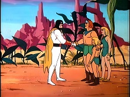
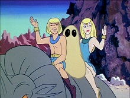
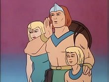
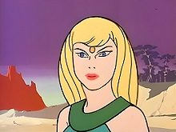
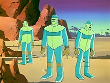

Página Inicial
Personagens
Temporadas
Curiosidades
Dubladores
Curiosidades

Já houve um crossover com Space Ghost.

O planeta natal dos Herculóides foi nomeado Amzot. Em 1981, o planeta foi renomeado para Quasar

O personagem de Zandor foi originalmente chamado de "Zartan". Da mesma forma, seu filho Dorno foi originalmente chamado de "Domo"

Tara é a única de sua família que não usa uma tanga, pois como é mulher ficaria com seus seios a mostra

Em alguns episódios aparecem tecnologias do passado (como robôs muito avançados), portanto ou foram deixados por alguma raça invasora antiga ou a série poderia se passar em um futuro apocalíptico